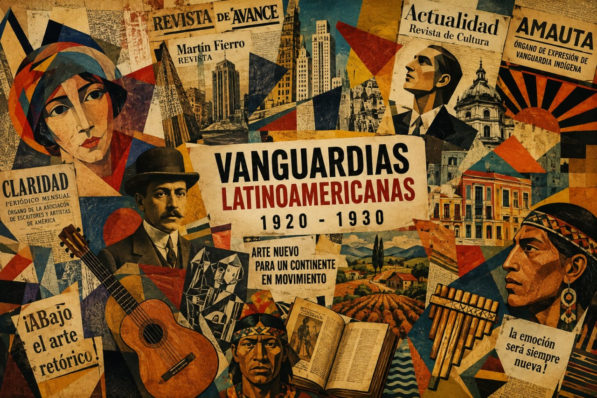

¿Qué son las vanguardias?
Fueron movimientos artísticos y culturales que buscaron romper con lo tradicional y explorar nuevas formas de ver el mundo.
Leer más →
Exploramos las ideas, obras y movimientos que transformaron el arte, la literatura y la cultura en América Latina.

Seleccioná un país para conocer sus vanguardias.
Pintura, escultura, dibujo y nuevas formas de expresión.
Poemas, manifiestos y relatos que rompieron esquemas.
Ritmos, sonidos y composiciones innovadoras.
Escenografías, obras y nuevas propuestas teatrales.
Fueron movimientos artísticos y culturales que buscaron romper con lo tradicional y explorar nuevas formas de ver el mundo.
Este espacio está pensado para publicar trabajos, producciones audiovisuales, artículos y proyectos realizados por los estudiantes.
Un recorrido por el arte y las vanguardias de 1920-1930. Explorá las obras, descubrí a sus artistas y
conocé las nuevas formas de expresión que transformaron la cultura en América Latina.
¡Cada obra tiene una historia para descubrir!